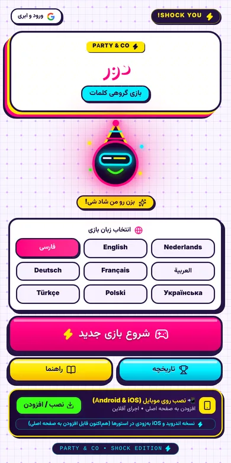
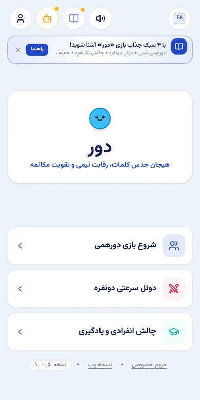

نام محصول: دور و دور: زبان
بازی مهمانیای که در ده ثانیه شروع میشود
چطور «تیکتاک» را طراحی کردم، بازی حدس کلمه برای یک گوشی که دور اتاق میچرخد، و بعد همان حلقه را دوباره به کار بردم تا تمرین زبان حس شبنشینی بدهد.


مسئله
بازیهای کارتی حدس کلمه پای ثابت شبنشینیها و مهمانیهاست، در خانههای ایرانی هم. اما جعبهٔ کارت فقط یک زبان بلد است، و بیشتر نسخههای اپی فرض میکنند همه انگلیسی میخوانند، حساب کاربری و اینترنت میخواهند، و همین که کسی وسط دور دکمهٔ اشتباه را بزند، به هم میریزند.
چطور هر جمعی بتواند در چند ثانیه، به همان زبانی که سر آن میز حرف میزند، دور را شروع کند؟
محدودیتها
- یک گوشی برای همه. همه در مهمانی اپ نصب نمیکنند؛ گوشی میزبان باید کافی باشد.
- جمعهای ناهمگون. سنها و زبانهای مختلف در یک اتاق.
- اینترنت مطمئن نیست. باغ، سفر، خانهٔ فامیل.
- سروصدا و هیجان. داد میزنند، گوشی را میقاپند و دکمهٔ اشتباه را میزنند. بازی باید ببخشد.
تصمیمها
ساخت و تست
قانونها، صفحهها و حالتهای مرزی را به شکل مستندات نوشتم، با ابزارهای کدنویسی هوش مصنوعی ساختم و هر انتشار را با چکلیست ده سناریویی خودم تست کردم: شروع، صدا، تکرارنشدن کلمهها، تایمر، دستبهدست شدن نوبت، صفحهٔ برنده، نمایش موبایل، توقف و از نو، نصب، و بازی آفلاین.
نوشتن چکلیست پیش از ساخت یعنی هر گزارش باگ به یک سناریو اشاره میکرد و هر رفع باگ با همان سناریو بررسی میشد.
مهمانی زبانها
حدسزدن کلمه از روی توضیح همتیمی دقیقاً همان تمرینی است که زبانآموز لازم دارد. پس حلقه را دوباره ساختم و شد «مهمانی زبانها»:
- کارتهایی با واژه و عبارت واقعی، سطحبندیشده با CEFR از A1 تا C1.
- تا چهار زبان یادگیری همزمان، تا جمع چندزبانه با هم بازی کند.
- حالت گروهی، دوئل دونفره و تکنفره، با مرور فاصلهدار اشتباهها.
- مدل فریمیوم که نسخهٔ رایگانش بیشتر امکانات را دارد؛ مدل درآمدی و اپیکها را با داستانهای کاربری نوشتم.
مسئلهٔ طراحی بعدی سختی است: دارم الگوریتمی تطبیقی را مستند میکنم که کارتها را برای هر بازیکن سختتر یا آسانتر کند تا دورها نزدیک بمانند.
نتیجه و قدم بعد
هر دو بازی به شکل وباپ نصبشدنی منتشر شدهاند و هنوز کاربر واقعی ندارند. قدم بعدی بازیآزمایی منظم با گروههای واقعی است، با این سنجهها:
- تعداد دور در هر نشست، و چند گروه در همان هفته دوباره بازی میکنند.
- چند بار و کجا دکمهٔ برگشت زده میشود: نقشهای از جاهایی که ضربهها اشتباه میروند.
- دوری که بازیکنها در آن دست میکشند، برای تنظیم طول و سختی.
اگر دوباره میساختم
نُه زبان را پیش از تست با حتی یک گروه اضافه کردم و حالا کیفیت ناهمسان فهرست کلمهها یک ریسک است. دفعهٔ بعد اول حلقه را با یک یا دو زبان ثابت میکنم، بعد گسترش میدهم.